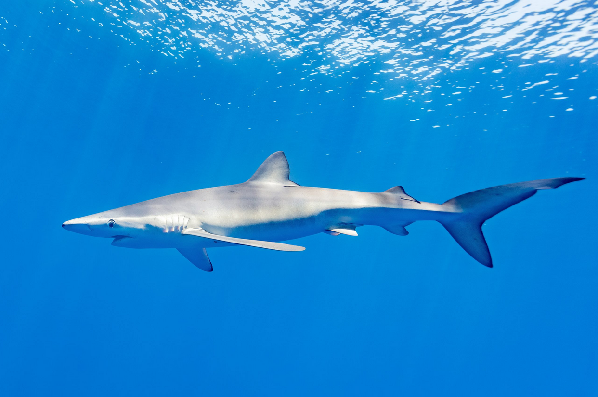
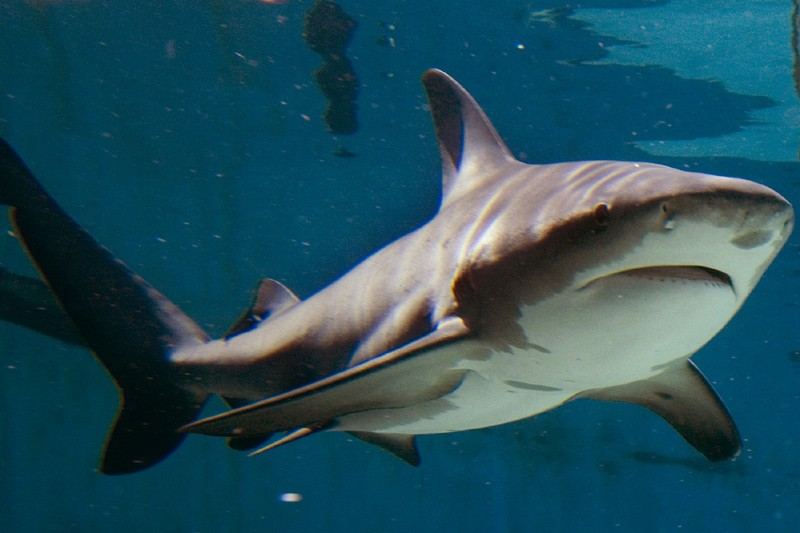
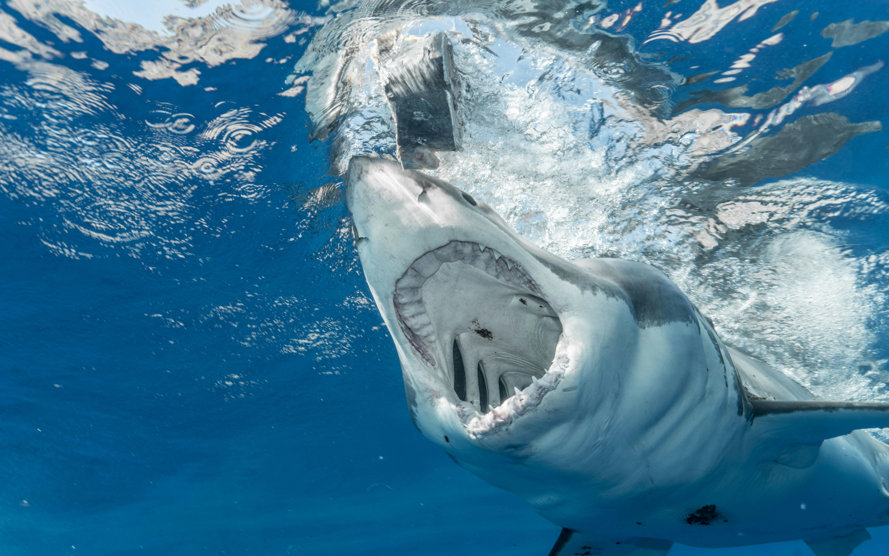

Les Requins, Leurs beautés et leurs importances dans l'environement
Accueil
Le top du main
L'impact sur l'environement
Le nombre de mort causés par les Requins
La galerie d'image
Le pied de page
Sources
AVNJ - Sharks are not monster video
Plus d'info sur les requins du Québec
comment aider

Un requin bleu
La beauté des requins
Leurs rôles sur l'environement

Une requin bouledogue

Un requin blanc
Ils ne sont pas des mangeurs d'humains!